ذكريات صلالة واللقطات السحرية
أماكن رائعة لالتقاط أبهى الصور والمناظر الطبيعية الخلابة لتبقوها خالدة في البومات عائلتكم السعيدة.


دليل متكامل للرحلات العائلية الراقية وسط الطبيعة العُمانية البكر
ابدأ الاستكشافبوابة الجمال الجنوبي في سلطنة عُمان، حيث يلتقي بحر العرب بالضباب والجبال الشامخة المكتسية بالخضار الأخاذ في موسم الخريف المميز.
موسم منعش، متوسّط الحرارة بين ٢٤° و ٢٨° مئوية، ممتلئ بالرذاذ المستمر والغيوم الملامسة للأرض.
الريال العُماني (OMR). يُفضّل توفير بعض النقد للمعاملات الصغيرة في الأسواق التقليدية (سوق الحافة).
وجهة مثالية وآمنة جداً للعائلات والأطفال، حيث الترحيب العُماني الأصيل والطبيعة الهادئة الرحبة.
شرطة عُمان السلطانية: ٩٩٩٩
مستشفى السلطان قابوس: ٢٣٢١١١١١
تجوّل في خطة الرحلة المنظمة بعناية لموازنة الراحة والجمال الطبيعي، دون الاستعجال ومع المحافظة على الخصوصية العائلية.
نبدأ رحلتنا بالاستقرار وتذوق طعم التراث العماني في قلب صلالة التاريخية والحديثة مع إطلالة الغروب الرائعة.
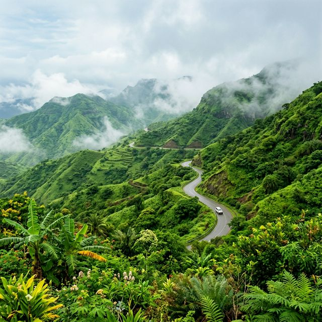
الوصول مطار صلالة الدولي، استلام الحافلة العائلية الفاخرة (٨ مقاعد)، والتوجه إلى الفندق لتسجيل الدخول وأخذ قسط من الراحة للتخلص من عناء رحلة الطيران.
احرص على أخذ قسط كافٍ من النوم نهاراً، فالفترة المسائية ستكون ممتعة ومليئة بالتمشي والاسترخاء.
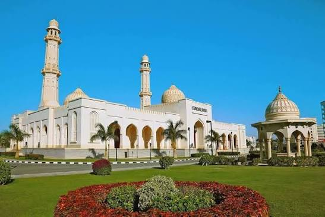
الجامع الأكبر والأجمل بالمدينة، ويتميز بتصميمه المعماري الإسلامي الفريد والنقوش الهندسية الرائعة والثريات الضخمة الساحرة.
يتطلب الدخول الالتزام باللباس المحتشم الساتر، وتغطية الرأس للنساء. الزيارة لغير المسلمين مسموحة في الفترة الصباحية فقط، لكن المعلم يستحق التأمل الخارجي والحدائق المحيطة مساءً.
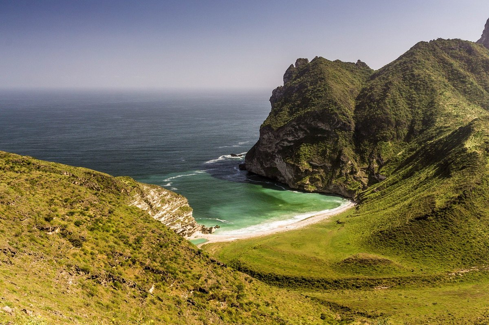
شاطئ رملي ساحر تداعب مياهه أشجار جوز الهند الممتدة على طول الساحل. مكان يعج برائحة البحر والهدوء وباعة الفواكه الاستوائية الطازجة.
الرمال ناعمة ومثالية لبناء القلاع الرملية، لكن احذر تماماً من السباحة للبالغين والأطفال بسبب شدة التيارات البحرية في بحر العرب خلال هذا الموسم.
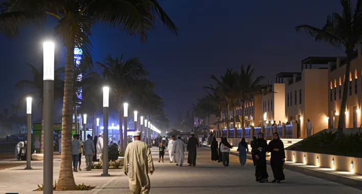
القلب النابض لصلالة والتراث العماني. تفوح منه روائح اللبان الحوجري الأجود عالمياً، عطور البخور والعود والمنتجات الفضية التراثية والهدايا التذكارية المميزة.
المكاسرة والمساومة مقبولة ومطلوبة دائماً باللطف. احرص على تذوق البخور واللبان قبل الشراء لمعرفة الجودة (اللبان الأخضر هو الأفضل).
مطعم راقٍ يقدم تشكيلة مذهلة من المشاوي والأسماك العمانية الطازجة والمأكولات البحرية على الطراز المحلي والعربي، مناسب جداً ومريح للعائلات وتجمعاتها الكبيرة.
التكلفة المتوقعة: ٥ - ٨ ر.ع للشخصلتقديم الأغذية المحلية الشعبية مثل المعجين واللحم المظبي الأصيل والمكبوس في أجواء ريفية راقية تراثية ومقاعد ممتازة للعائلات الحريصة على التجربة الأصيلة.
التكلفة المتوقعة: ٤ - ٧ ر.ع للشخصنغادر اليوم للتغلغل في الطبيعة الاستوائية المورقة لصلالة، تليها زيارة القلاع والشواطئ التاريخية في ولاية طاقة المجاورة.
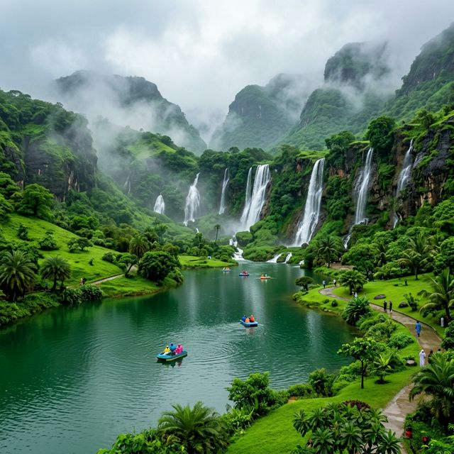
وادي دربات هو تحفة الطبيعة الكبرى؛ بحيرة واسعة يمر بها النهر، تحيطها جبال خضراء شاهقة وجمال لا يوصف. هنا يمكن للعائلة ركوب القوارب الترفيهية والتنقل بين المساحات الخضراء الشاسعة ومشاهدة الجمال والخيول الطليقة والجمال الطبيعي للغابات العمانية.
انتبه تماماً للأطفال من الانزلاق على العشب المبلل وصخور الوادي. لا تحاولوا السباحة في مجرى المياه لخطورة التيارات والبقع الطينية. يُنصح بأخذ قارب التجديف الجماعي أو القارب السريع المغطى للعائلة (التكلفة حوالي ٣-٥ ر.ع للقارب).
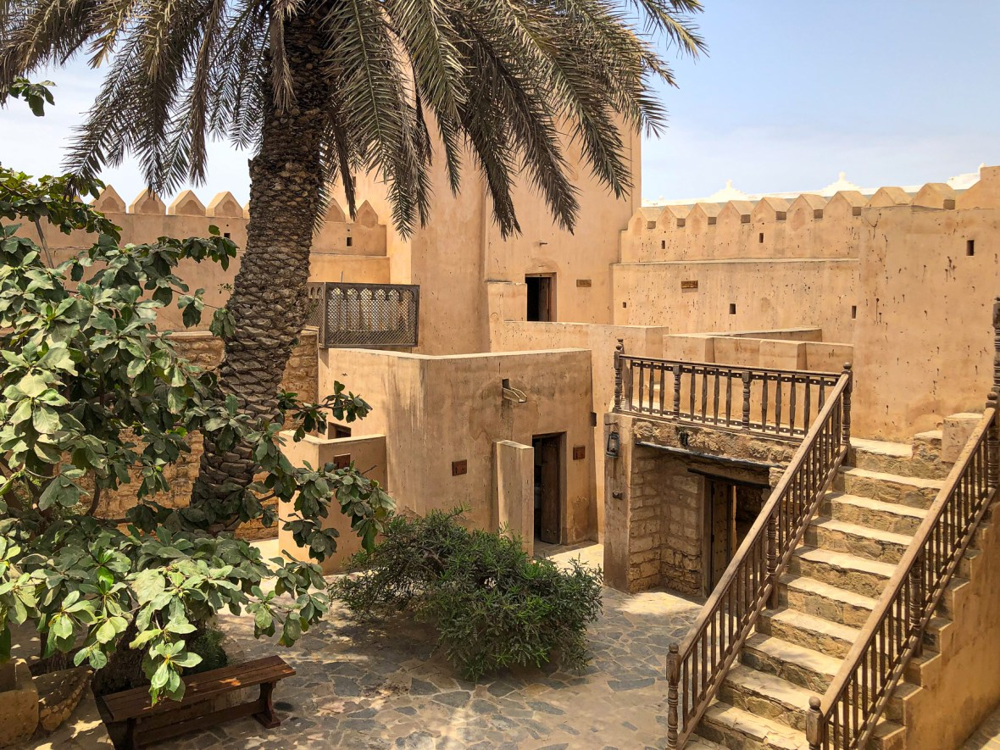
حصن أثري جميل من القرن التاسع عشر يقع في قلب ولاية طاقة العريقة. يعرض نمط حياة الوالي القديم، والأسلحة والملابس والغرف السكنية التراثية المزينة بشكل رائع.
يحتوي الحصن على درجات سلم خشبية ومرتفعات للوصول لأبراج المراقبة ذات الإطلالة الساحرة. يرجى مرافقة الأطفال ومساعدة كبار السن أثناء الصعود.
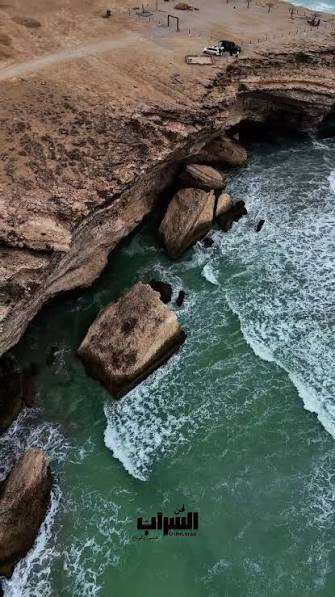
شاطئ نقي يتميز بمرتفع صخري يطل عليه بالكامل (كوت طاقة)، يوفر مشهداً استثنائياً للمحيط وقوارب الصيد التقليدية عند تلاقيها وتلاطم أمواج البحر العاتية.
اصعدوا بالسيارة الفان إلى أعلى مرتفع طاقة للاستمتاع بالإطلالة كاملة دون بذل مجهود شاق للمشي، والمكان ممتاز ومناسب لالتقاط الصور العائلية.
وجبات محلية شهية، أطباق أرز ومشاوي مغلفة تقدم وسط الطبيعة أو وجبات خفيفة ممتازة لتستمتع بها العائلة أثناء جلستها ونزهتها في ربوع الوادي المورق.
التكلفة المتوقعة: ٣ - ٥ ر.ع للشخصبعد الرجوع للمدينة، استمتع بأروع مأكولات الأسماك المطهوة في التنور أو لحوم المندي والعرسية العمانية اللذيذة بجلسات أرضية خاصة مريحة وواسعة جداً تلائم مجموعتكم.
التكلفة المتوقعة: ٤ - ٦ ر.ع للشخصيوم يجمع بين أعالي الجبال المغطاة بالضباب، وينابيع المياه العذبة الهادئة، ثم الختام مع أعجوبة الطبيعة في شاطئ المغسيل والنافورات الطبيعية.
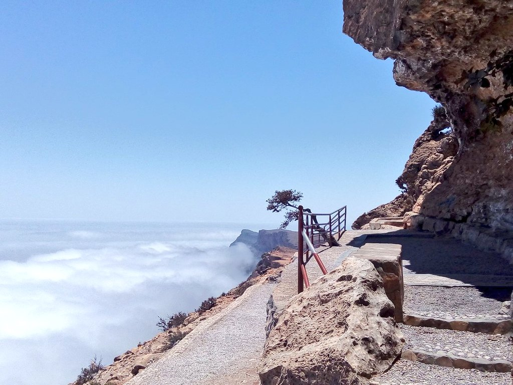
أحد أعلى جبال محافظة ظفار، يتميز مطلّه الشهير بإطلالة شاهقة تنحدر عمودياً لمئات الأمتار على السهل الساحلي. غالباً ما تتجمع الغيوم أسفل المطل لتعطيك إحساساً رائعاً بأنك تقف فوق بحر من الغيوم البيضاء والضباب اللطيف الخفيف.
تكون درجات الحرارة بالأعلى باردة نوعاً ما والرياح قوية، لذا يرجى إحضار سترات خفيفة لكافة أفراد العائلة وبالأخص للطفل. المطل لا توجد به حواجز أمان ممتدة بالكامل، لذا يجب إبقاء الأطفال قريبين وممسوكي الأيدي تماماً وتجنب الاقتراب الشديد من الحافة الجبلية الساحرة.
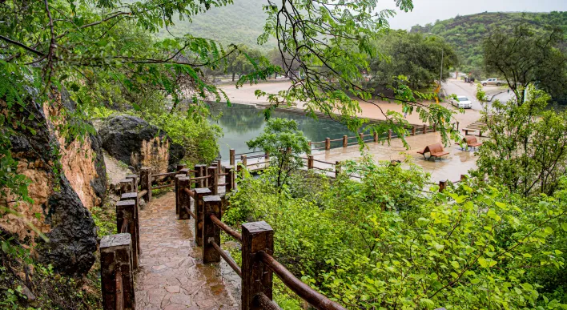
من نبع المياه العذبة الأكثر وفرة بصلالة. يقع أسفل كهوف جبلية وبها حدائق منسقة تمشي فيها وتتأمل الجداول المائية الهادئة والزهور الملونة والطيور المحيطة.
الطبيعة المائية تعني وجود بعض الحشرات الطائرة والبعوض اللطيف، ننصح برش بخاخ طارد الحشرات الطبيعي وخاصة لبشرة طفلكم الحساسة لحمايتهم أثناء الجولات الميدانية.
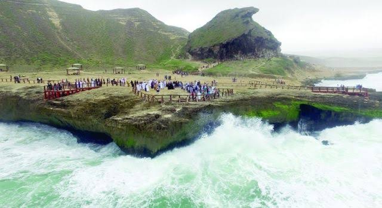
الرحلة للجهة الغربية لصلالة حيث تكتسي الشواطئ طابعاً دراماتيكياً. بزيارة ممشى كهف مارنيف الصخري الغريب، والوقوف فوق منصات فتحات النوافير الطبيعية (Blowholes) لمشاهدة اندفاع المياه بقوة مئات الأمتار للأعلى مصدرةً صوتاً هادراً وجميلاً عند تلاطم موج البحر العاتي.
أرضية النوافير قد تكون رطبة ومنزلقة، التزموا بالبقاء خلف الحواجز الحديدية المعدة للسلامة. لا تسمح للأطفال بالوقوف وحيدين فوق شبك النافورات، واحرصوا على ارتداء أحذية رياضية مريحة مع حماية الكاميرات والهواتف من الرطوبة ورذاذ مياه البحر المالحة.
مقهى فاخر يوفر تشكيلة رائعة من المشروبات والقهوة المختصة والحلويات الشرقية والغربية مع جلسات داخلية مريحة تمنح الأسرة فرصة ممتازة لمراجعة وتأمل صور لقطات الجبل والبحر الجميلة.
التكلفة المتوقعة: ٢ - ٤ ر.ع للشخصمطعم ملائم ومحترم جداً يقدم تشكيلة متميزة من مشويات اللحوم الطازجة والخبز الحار الشامي والمقبلات المتنوعة، ذو سمعة ممتازة ونظافة مميزة تليق برحلة العائلات الراقية.
التكلفة المتوقعة: ٥ - ٧ ر.ع للشخصنختم رحلتنا بجولة ممتعة في المراكز التجارية لتسوق الهدايا، تليها تجربة منعشة لتذوق الفواكه الاستوائية بوسط المدينة قبل الانطلاق للمطار.
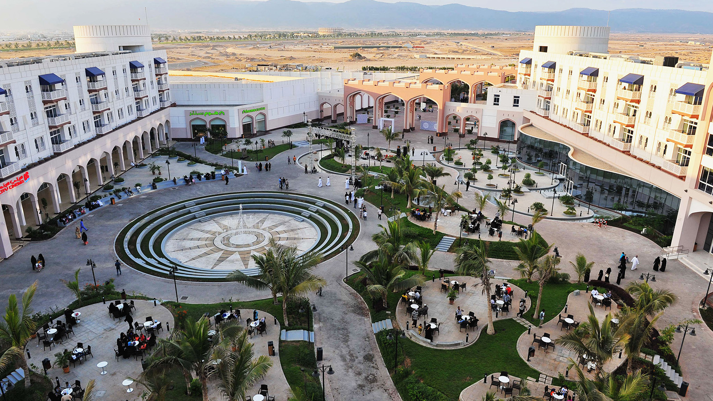
أول مجمع تجاري متكامل مبني على الطراز العماني التقليدي الأنيق والمفتوح بالمدينة. يضم مجموعة واسعة من متاجر الأزياء والعطور والتقنيات والمراكز الترفيهية الفاخرة.
تتوفر به محلات لبيع العطور العمانية التقليدية والفاخرة (مثل عطور أمواج الراقية)، ومحلات للحلوى العمانية التقليدية الطازجة والمعبأة بشكل آمن وسهل للشحن الجوي.
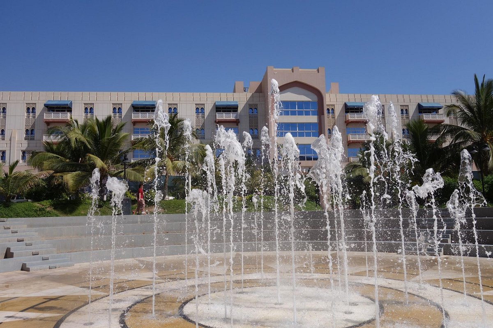
المركز الحديث الأكبر بصلالة، يحتوي على خيارات متنوعة ومحلات واسعة لمستحضرات التجميل العالية الجودة، وأكشاك الهدايا والصناعات اليدوية المحلية والوجبات الخفيفة والحلويات.
يمكنكم المرور بفرع بيع "الحلوى العمانية الديوانية" لشراء علب الحلوى الملكية الساخنة والملفوفة بعناية لإهدائها للأهل عند الرجوع للوطن.
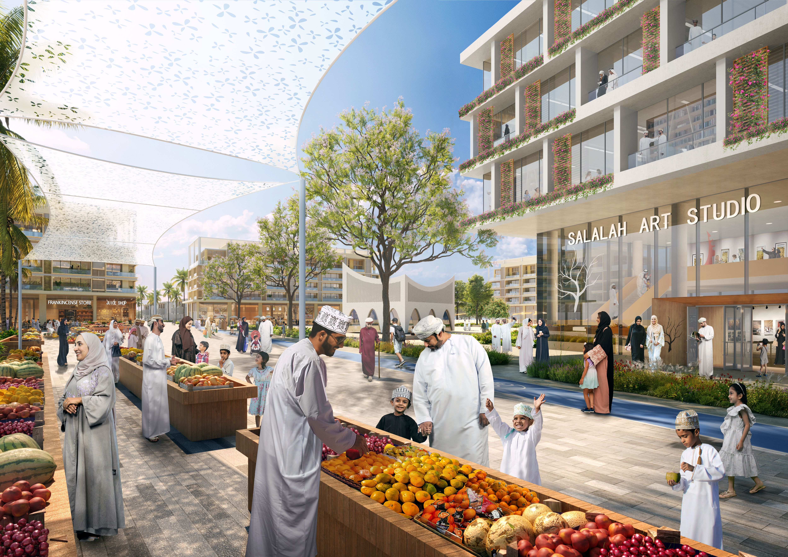
أكشاك خشبية تقليدية منتشرة بكثرة وسط المدينة تقدم ثمار النارجيل وتسمى محلياً "المشلي" (جوز الهند الأخضر الاستوائي المليء بالماء اللذيذ المنعش)، والموز الصغير الاستوائي الحلو النكهة والببايا المتميزة.
انزلوا جميعاً لتناول زجاجة جوز هند طازجة يفتحها البائع بالساطور أمامكم، واطلبوا منه بعد شرب مائها اللذيذ والمنعش أن يقسمها لكم لتتناولوا اللب الأبيض اللين المغذي (المشلي) بملعقة خاصة مصنوعة من قشرة الثمرة نفسها، إنها تجربة سيعشقها طفلكم!
مطعم ذو شهرة عالية لتقديم تجربة عمانية حقيقية تماماً، في صالونات أرضية مغلقة وهادئة للعوائل، ننصح بتجربة "القبولي العماني ولحم المظبي الفاخر" ليكون مسك الختام المذاقي للرحلة.
التكلفة المتوقعة: ٤ - ٦ ر.ع للشخصبعد تناول الغداء، يتم التوجه لمطار صلالة الدولي وتسليم الحافلة العائلية للشركة، وإنجاز إجراءات العودة للوطن بمشاعر دافئة وذكريات عائلية لا تُنسى.
تنسيق وتوقيت: الحضور للمطار ساعتان قبل موعد الإقلاعقم بالتعديل على الميزانية المخصصة لمختلف الجوانب لمتابعة الحساب والإنفاق المالي الإجمالي المقدر للرحلة عائلياً (٧ كبار + طفل).
لا تنسَ أي مستلزم هام، احرص على استخدام قائمة التحقق المدروسة لرحلة صلالة في موسم الخريف المميز وعلم على ما تم تجهيزه وتعبئته:
مطبخ صلالة ثري بالنكهات ومستمد من البيئة الجبلية والساحلية، ننصح بشدة بتجربة هذه الأصناف الكلاسيكية:
التودد إلى الباعة وأفراد المجتمع بمصطلحات وطريقة التحدث المحلية يزيد من دفء العلاقة وتجربتكم السياحية:
دون هنا خططك الإضافية، مواعيد الطيران، هواتف السائقين، أو ذكريات مفاجئة لرحلتكم في صلالة. سيقوم نظامنا بحفظ مدوناتكم تلقائياً في المتصفح.
أماكن رائعة لالتقاط أبهى الصور والمناظر الطبيعية الخلابة لتبقوها خالدة في البومات عائلتكم السعيدة.